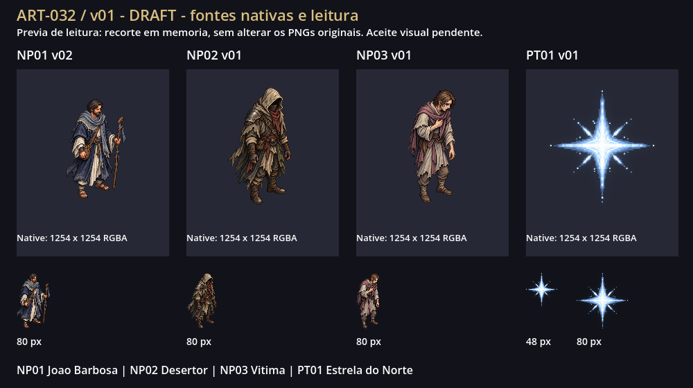
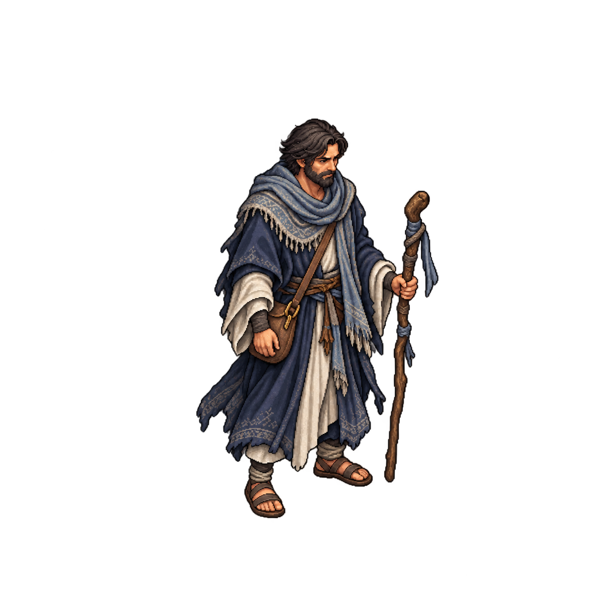
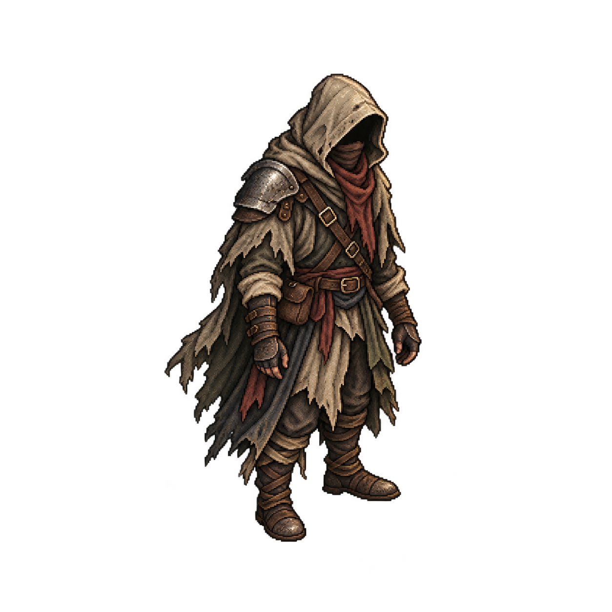
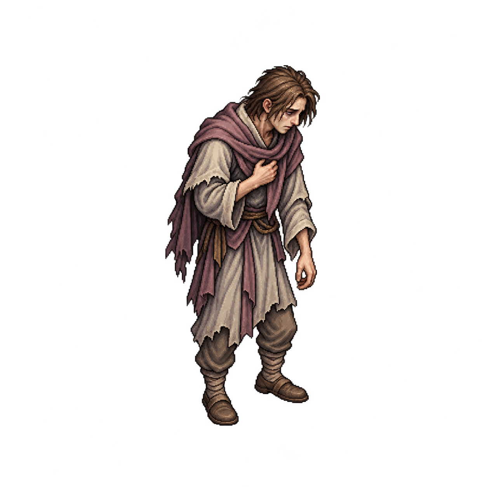
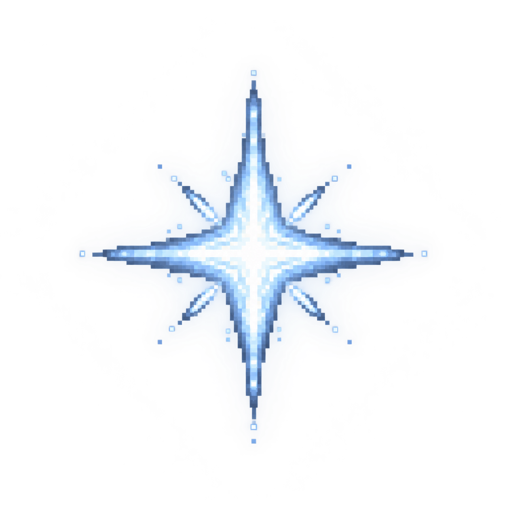
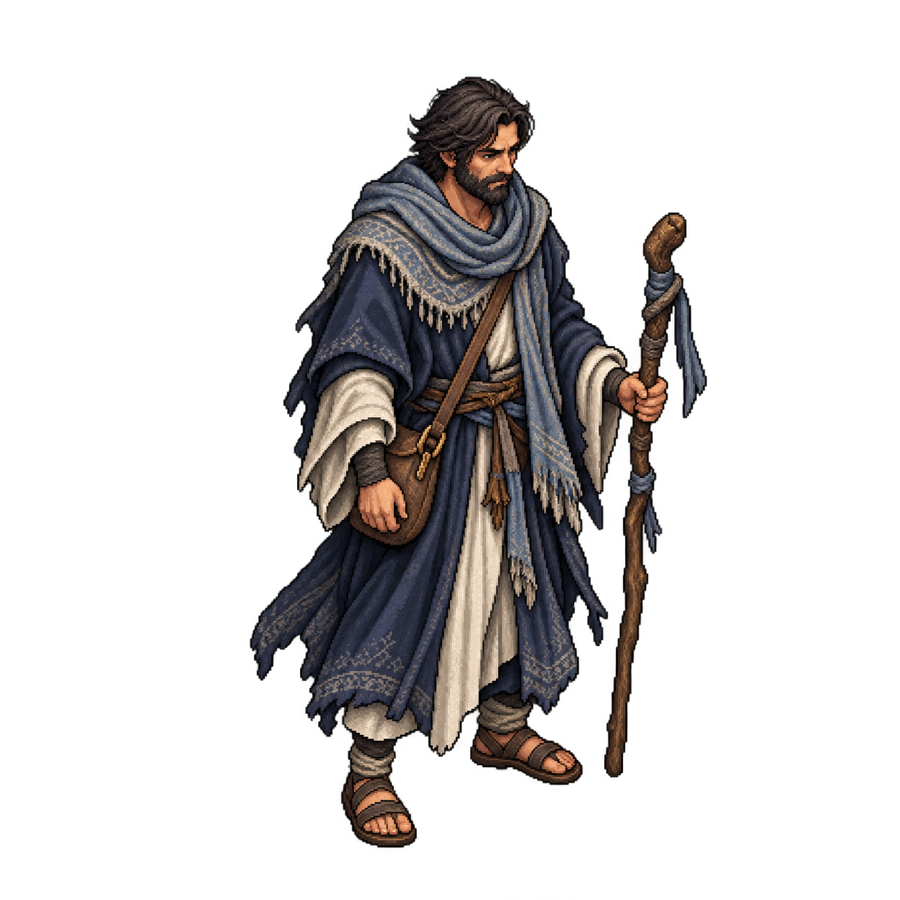

ART-032 / v01 · quatro peças DRAFT
Revisão visual aprovada pelo dono — S-005 concluído (5/5). João NP01 v02; desertor NP02 v01; vítima NP03 v01; estrela PT01 v01. Aprovar este plano autorizou produção, não promoveu as imagens a CANON. Sem admissão no jogo, commit, push ou build.
O dono respondeu “Aprovo visualmente as quatro revisões”. As quatro revisões continuam DRAFT, sem CANON ou admissão. Recibo do aceite visual.
Fontes originais RGBA preservadas. Canvas nativo real 1254×1254 (pedido 1024×1024). A prévia recorta somente em memória a caixa visível com alfa > 8 e a desenha com suavização do browser; a altura indicada é do motivo, não da margem transparente. Nenhum PNG foi redimensionado ou limpo. Clique na imagem grande para abrir a fonte nativa.
NP02/NP03/PT01 têm resíduo nativo de alfa 1/255 na borda. Não é corte do objeto; limpeza/normalização final permanece posterior. João v02 tem borda exatamente transparente.
A inspeção automatizada desta página no navegador não ocorreu: a política de URLs bloqueou file://. A leitura foi conferida na prancha estática renderizada pelo Godot, com os mesmos recortes e alturas. Os links e metadados da galeria foram validados localmente.

Carregando as prévias…
Auditoria · Prompts e rastreabilidade · Prompts completos
NP01 · João Barbosa v02 · DRAFT

Papel confirmado no vault; aparência proposta DRAFT. v02 corrige a margem inferior; v01 preservada.
Canvas nativo: 1254×1254. Margem mínima visível: 15.15%. Alfa máximo na borda: 0/255.
NP02 · Desertor de Durao v01 · DRAFT

Espécie e gênero não definidos; rosto oculto, sem fixar identidade de humano/demônio.
Canvas nativo: 1254×1254. Margem mínima visível: 11.40%. Alfa máximo na borda: 1/255.
NP03 · Vítima enfeitiçada v01 · DRAFT

Humano adulto debilitado, vestido, vivo; aparência genérica DRAFT.
Canvas nativo: 1254×1254. Margem mínima visível: 12.52%. Alfa máximo na borda: 1/255.
PT01 · Estrela do Norte v01 · DRAFT

Miragem/ponto de guia; geometria luminosa DRAFT, sem representar o corpo de uma divindade.
48 px de altura visível
80 px de altura visível
Canvas nativo: 1254×1254. Margem mínima visível: 12.44%. Alfa máximo na borda: 1/255.
João v01 preservado
A v01 manteve 5,58% de margem inferior; a v02 gerada preserva a identidade proposta e amplia a menor margem para 15,15%. A v01 permanece como histórico, sem seleção automática pelo dono.

Ao revisar: avaliar identidade/traje de João, leitura de resgate do desertor e da vítima, estilo/câmera e leitura da estrela a 48/80 px. Informar código e revisão de qualquer ajuste. O aceite visual tem gate próprio; integração e publicação exigem autorização separada.